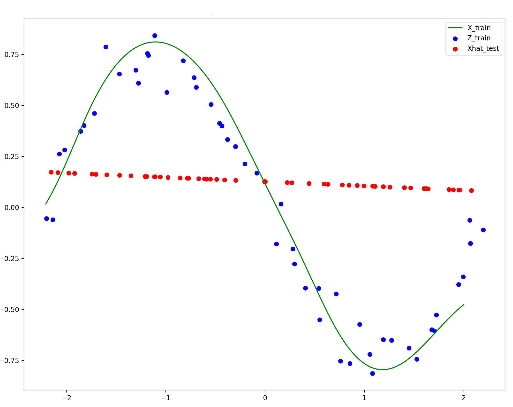
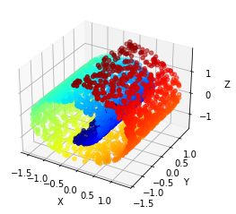
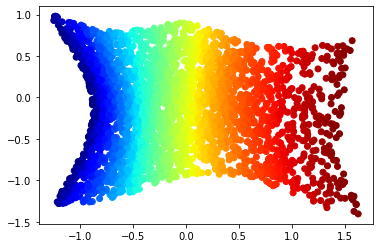

Summary
This paper proposes a novel method for automatically constructing a nonlinear autoencoder pair for a given dataset, using manifold-type geometric properties of the data. In particular, we look to generate an autoencoding pair where the features are of minimal dimension, while still maintaining the invertibility property of the autoencoding pair. We achieve this through a particular type of manifold flattening. At each step, we:- Pick a random point on the manifold,
- Linearize and reconstruct the manifold locally near the chosen point, and
- Add the local linearization and reconstruction as layers to an encoder and decoder .
For details on the main geometric flow and how such flattenings and reconstructions are found from finite samples, see the main paper. Of important note here: many intrinsic properties of the data and generated neural network models are chosen automatically, including the intrinsic dimension of the data, the width & depth of the networks, stopping time, etc.
Illustrative examples
The focus of this work are the learned representations of the data. We hypothesize that learning geometrically flattened representations yields many properties that many desire from pursuits like "disentangled representation learning": feature separability, linear interpolatability, and generally leading to ease of downstream learning tasks. This paper is a demonstration that such "geometric representation learning" is feasible, and yields training algorithms with only a handful of scalar hyperparameters to choose. Below are a few visual examples from the paper to illustrate what our method hopes to achieve. Note that reconstruction quality is not the focus of this work, and thus they are not perfect: these imperfections and tail behaviors come from a "compounding errors" problem, as we compute these global inverse maps by stacking many local inverse maps. As described in the main paper however, computing these local inverses is still necessary to learn good intrinsic representations.
Note that this geometric flow-based autoencoding method automatically denoised the data into the intrinsic manifold the data was generated from. While reconstruction quality dies off near the tails, this compounding error is certainly not an unavoidable problem, and is a good focus for future work.

Figure 2: an illustration of the benefit of linearized features. The bottom row are two MNIST images $x_a$ and $x_b$ linearly interpolated: $\lambda x_a + (1 - \lambda) x_b$, and the top row are the same two images, but (a) passed into features $f(x_a)$ and $f(x_b)$, (b) linearly interpolated as features, and (c) reconstructed using $g$: $g(\lambda f(x_a) + (1 - \lambda)f(x_b))$. One benefit of linearizing the dataset is that nonlinear interpolation along the dataset becomes linear, allowing for proper data exploration. Note that not all interpolated examples in MNIST look like the one above, since even when flattened, MNIST still has some amoeba-like structure: see the main paper for the intrinsic features learned on the synthetically-generated MNIST sub-datasets.



An experimental note: our geometric flow for this paper is compressive by nature, so manifolds like the Swiss roll serve as academic counterexamples to the kinds of manifolds our flow is able to flatten and regenerate. However, if you add an extra nonlinear feature to the data (here, we used $x_4 = x_1^2 + x_3^2$), then the flattening becomes much more tractible1. While this feature was chosen based on our knowledge of the Swiss roll, the same would have worked if we generated many different random nonlinear features; as long as one of the extra features spreads out the manifold like $x_4 = x_1^2 + x_3^2$ does for Swiss roll, the resulting feature set will render the new, lifted manifold flattenable.
Citation
@article{psenka2023flatnet,
title={Representation Learning via Manifold Flattening and Reconstruction},
author={Psenka, Michael and Pai, Druv and Raman, Vishal and Sastry, Shankar and Ma, Yi},
year = {2023},
eprint = {2305.01777},
url = {https://arxiv.org/abs/2305.01777},
}